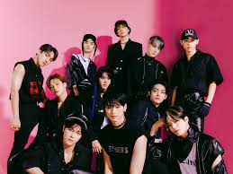
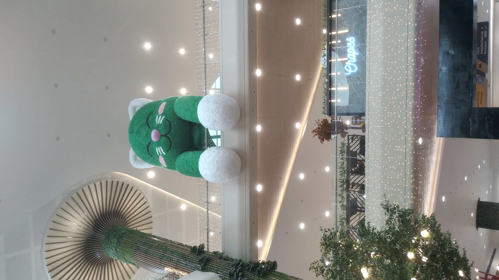
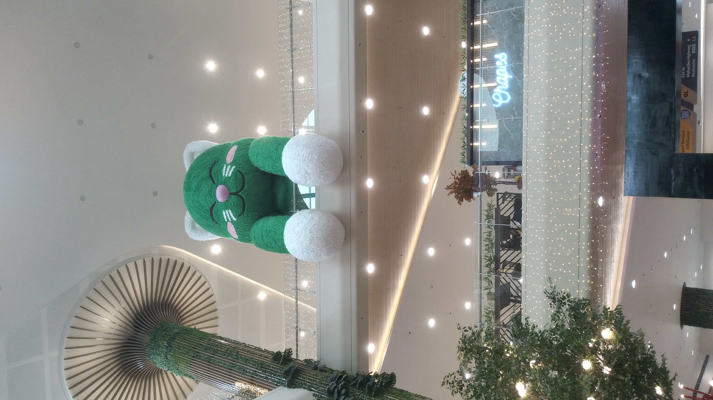
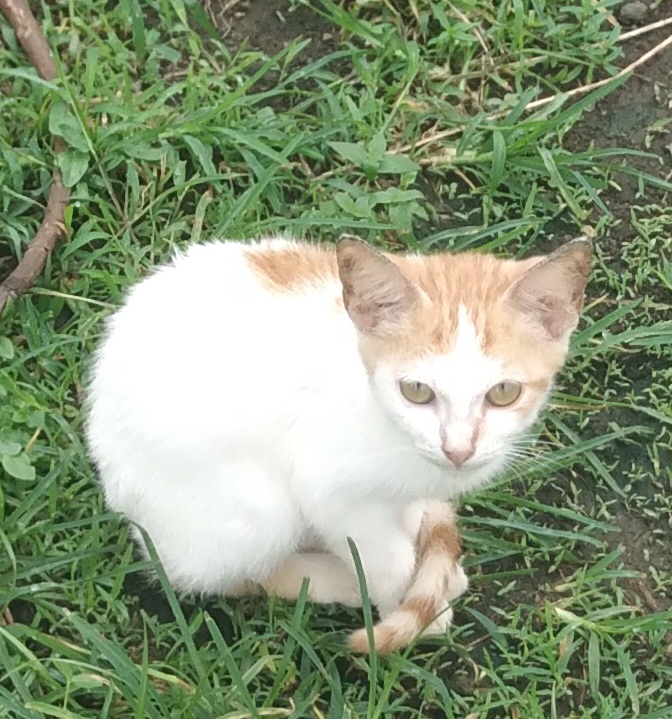
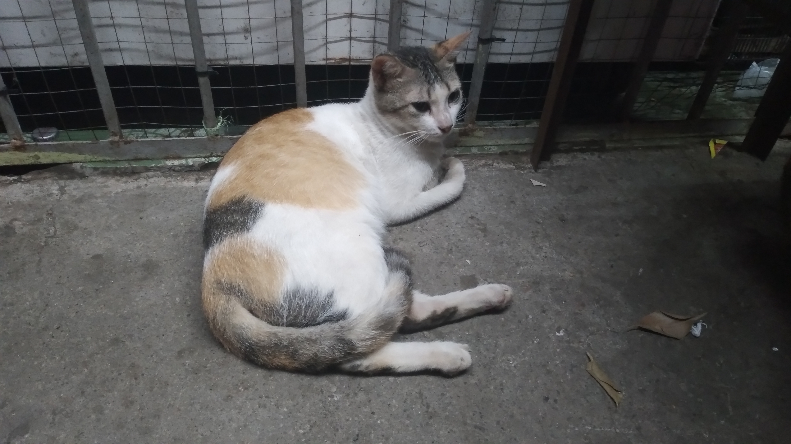
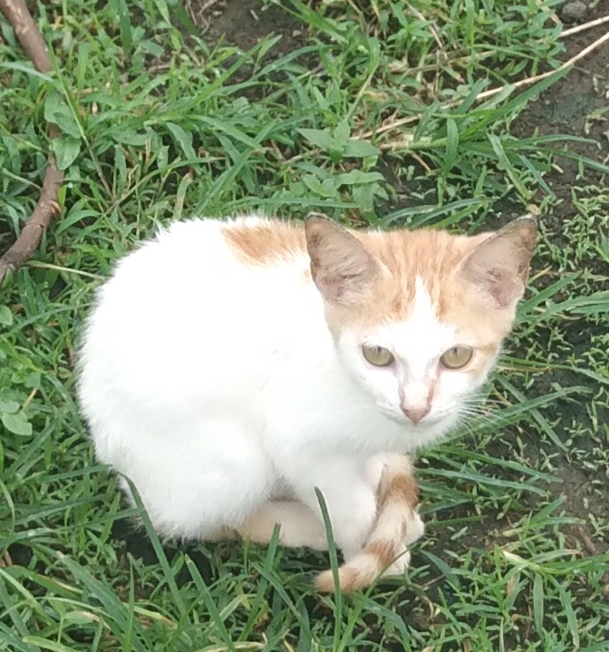
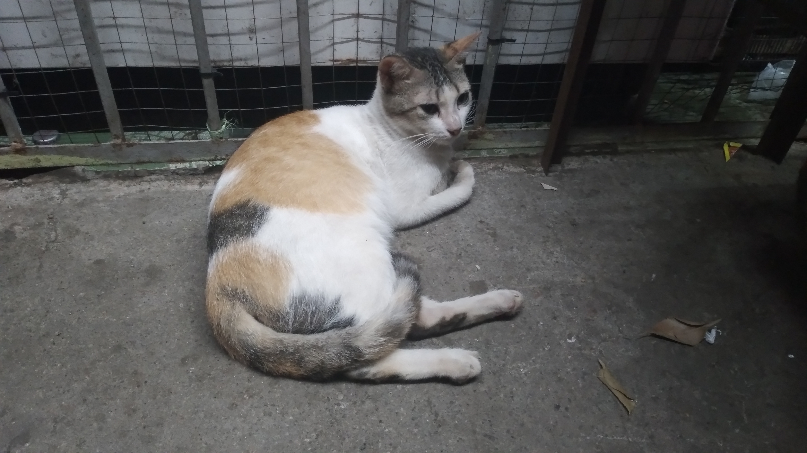
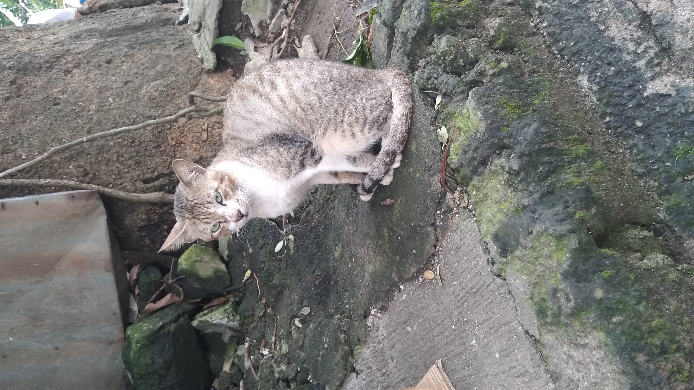
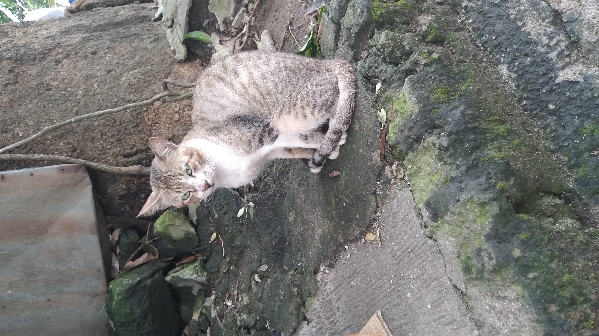

My Favorite Idols
G-Dragon
KWON JI-YONG (G-DRAGON) is a South Korean rapper, singer, songwriter, and entrepreneur. Best known as the leader of BigBang, he is often called the “King of K-pop” for his influence on music and fashion. As a solo artist, he is praised for his emotional depth, originality, and artistic vision, making him one of the most respected figures in the industry. Known for solo songs: Crooked, Untitled 2014, Heartbreaker
TOP

CHOI SEUNG-HYUN (T.O.P) is a South Korean rapper, musician, philanthropist, and actor. He debuted as the lead rapper of BigBang under YG Entertainment in 2006. During BigBang’s hiatus, he collaborated with G-Dragon on the album GD & TOP. As a solo artist, his singles showcased his deep voice, artistic style, and unique presence in the K-pop and hip-hop scene. Know for: Turn It Up, Doom Dada, Oh Mom
BigBang
BIGBANG is a South Korean boy band formed by YG Entertainment. The group consists of G-Dragon, T.O.P, Taeyang, and Daesung. Known as the “Kings of K-pop,” BigBang played a major role in spreading the Korean Wave globally. Their influence extends beyond music into fashion and culture, and they are widely regarded as one of the most impactful groups in K-pop history. Known for: Bang Bang Bang, Fantastic Baby, Haru Haru
2NE1
2NE1 is a South Korean girl group formed by YG Entertainment in 2009. The group consists of Bom, CL, Dara, and Minzy. They are known for their musical experimentation, bold fashion, and powerful stage presence. As one of the most influential K-pop girl groups, 2NE1 helped break stereotypes in the industry and played a major role in expanding the image of female idols worldwide. Known for: I Am the Best, Fire, Come Back Home
StrayKids
STRAY KIDS is a South Korean boy band formed by JYP Entertainment. The group has eight members: Bang Chan, Lee Know, Changbin, Hyunjin, Han, Felix, Seungmin, and I.N., with former member Woojin leaving in 2019. Stray Kids are known for their self-produced music, led by the production unit 3RACHA, and for their intense, high-energy performances and bold musical identity. Known for: God's Menu, Thunderous, Maniac
SevenTeen
SEVENTEEN is a South Korean boy band formed by Pledis Entertainment. The group consists of thirteen members: S.Coups, Jeonghan, Joshua, Jun, Hoshi, Wonwoo, Woozi, DK, Mingyu, The8, Seungkwan, Vernon, and Dino. They are known as a “self-producing” idol group, with members actively involved in songwriting, music production, and choreography, making them highly respected for their creativity. Known for: Very Nice, Don’t Wanna Cry, Super
ATEEZ
ATEEZ is a South Korean boy band formed by KQ Entertainment. The group has eight members: Hongjoong, Seonghwa, Yunho, Yeosang, San, Mingi, Wooyoung, and Jongho. ATEEZ is widely recognized for their powerful stage presence, intense performances, and strong storytelling concepts that run through their music and visuals. Their sound often blends aggressive energy with emotional depth. Known for: Wonderland, Guerrilla, Bouncy
 


 



 
